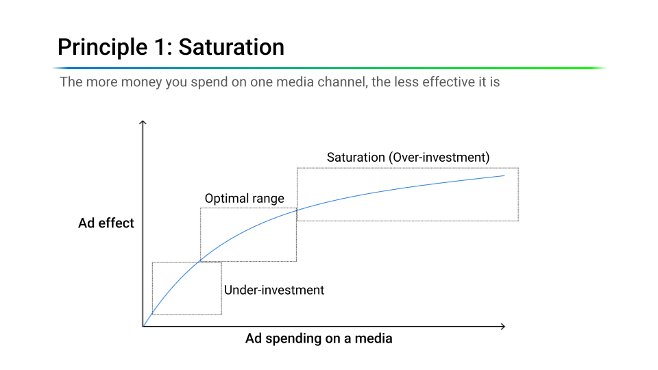

6.2 Building and Optimizing an MMM
What Is Marketing Mix Modeling?
Marketing Mix Modeling (MMM) is a statistical approach that uses aggregated time-series data (typically weekly sales and media spend by channel) to estimate how much each marketing channel contributes to business outcomes. Unlike user-level attribution, MMM works with aggregate data and does not require individual tracking, which makes it resilient to cookie loss, App Tracking Transparency, and walled-garden restrictions.
MMM serves three purposes:
- Measure: quantify each channel’s contribution and return on ad spend (ROAS).
- Simulate: answer “what if” questions, such as what happens to sales if we cut TV spend by 30%?
- Optimize: allocate a fixed budget across channels to maximize the expected outcome.

The renewed interest in MMM is not just nostalgia. As user-level tracking becomes less reliable, aggregate modeling is now the most practical way to measure cross-channel media effectiveness.
The MMM Equation
At its simplest, MMM is a regression of weekly sales on media spend, controlling for holidays, promotions, and other non-media drivers:
\[ y_t = \beta_0 + \sum_{c=1}^{C} \beta_c \cdot x_{c,t} + \sum_{k} \gamma_k \cdot z_{k,t} + \varepsilon_t \]
where \(y_t\) is sales at time \(t\), \(x_{c,t}\) is spend in channel \(c\), \(z_{k,t}\) are control variables, and \(\varepsilon_t\) is noise.

This simple regression is not enough for two reasons. First, media effects are not immediate: a TV ad this week can still influence purchases in the following weeks (carryover). Second, media effects are not linear: the hundredth GRP (gross rating point, a standard measure of TV audience delivery) in a week adds less than the first (diminishing returns).
A more realistic model applies adstock (carryover) and saturation (diminishing returns) transforms before the linear combination:
\[ y_t = \beta_0 + \sum_{c=1}^{C} \beta_c \cdot \text{Saturation}\bigl(\text{Adstock}(x_{c,t})\bigr) + \sum_{k} \gamma_k \cdot z_{k,t} + \varepsilon_t \]

Saturation (Diminishing Returns)
Every media channel eventually saturates: the more you spend on one channel, the less each additional dollar earns. The first million dollars of TV spend drives significant incremental sales; the tenth million drives far less. Figure 4 shows the three regimes this creates: an under-investment zone where each dollar still works hard, an optimal range, and a saturation zone where additional spend is largely wasted.

The Hill function is the most common way to model this:
\[ \text{Hill}(x) = \frac{x^S}{x^S + K^S} \]
where \(K\) (the half-saturation point, often called EC50) is the spend level at which the channel reaches 50% of its maximum effect, and \(S\) (the slope) controls how sharply the curve bends.
One practical note about \(K\) when you set its prior. Meridian applies adstock without normalizing it, so a channel with a six-week half-life carries an adstocked value several times its weekly median, and its half-saturation point has to live on that larger scale. A prior centered for a fast-decaying channel will exclude the truth for a slow one. The demo therefore keeps its funnel structure on adstock and gives saturation a single channel-independent prior, wide enough to cover every curve in the data, and lets the likelihood place each one.
This curvature is what makes budget reallocation valuable. In Figure 5, channel X sits deep in its saturation zone while channel Y still has headroom. Trimming budget on X costs $1M in sales, while adding that budget to Y gains $3M: a net gain of $2M on the same total spend. Shifting budget from saturated channels to under-invested ones can increase total return, even if the saturated channel’s average ROAS looks higher.

Adstock (Carryover Effects)
Advertising does not stop working the moment it stops airing. Adstock captures this lagged effect. The simplest form is geometric decay:
\[ \text{Adstock}_t = x_t + \lambda \cdot \text{Adstock}_{t-1} \]
where \(\lambda \in [0, 1]\) is the retention rate. A higher \(\lambda\) means longer carryover. Figure 6 and Figure 7 show the same three ad flights under two retention rates. At a high rate, typical of upper-funnel channels like TV, each flight’s effect lingers well after it airs, and overlapping flights stack on top of each other. At a lower rate, typical of digital channels, the effect fades within days.


The retention rate is easier to reason about as a half-life, the number of periods for the effect to fall by half, \(\ln(0.5) / \ln(\lambda)\). At weekly granularity, upper-funnel channels like TV are commonly modeled with half-lives of several weeks, while lower-funnel channels like paid search decay within about a week. The companion demo models every channel with geometric adstock over a 12-week window, and centers the decay priors by funnel stage: 6 weeks for TV/CTV and OOH (\(\lambda \approx 0.89\)), 3 weeks for Meta and TikTok (\(\lambda \approx 0.79\)), and 1 week for Google Search (\(\lambda = 0.5\)). Treat these as starting priors to be moved by the data, not as facts: published guidance varies, and the right values depend on your category and data granularity. A “weekly” retention rate applied to daily data implies a very different half-life.
More flexible alternatives exist. The Weibull adstock allows the decay shape to be non-monotonic: the effect can peak a few days after exposure before decaying, which better captures channels like email or direct mail where there is a natural processing delay.
Data Requirements
MMM requires three categories of input data:
- Target variable: weekly revenue or sales volume at the brand or product level.
- Media spend: weekly spend per channel (TV, social, display, search, direct mail, etc.).
- Control variables: holidays, seasonality indicators, promotions, pricing changes, competitor activity, macroeconomic factors, or any non-media driver that might explain sales variation.

Recommended granularity:
- Time: Weekly. Daily data is noisier; monthly data has too few observations.
- History: At least 2–3 years of data (roughly 104 to 156 weeks). With less history, it becomes hard to separate media effects from seasonality.
- Geography: National or brand-level is typical. Sub-national (geo-level) models can be more powerful, but they need more data and careful modeling.
- Channels: Only include channels where spend actually varies. If a channel spends the same amount every week, the model cannot learn its effect.
One check belongs with these and is easy to skip. Adstock and saturation smooth a channel’s contribution, so media can end up moving sales less from week to week than whatever the control variables fail to explain. When that happens the media coefficients are not identified, and no choice of prior repairs it: the estimator has nothing left to separate media from baseline with. Compare the two quantities before fitting. The companion notebook does it in Step 2b.
One more reason the control variables matter: media spend and sales usually share trend and seasonality by construction, and a shared calendar alone can manufacture a strong correlation between two series that have nothing to do with each other. The seasonality and trend controls are what keep that shared structure out of the media coefficients.

The Bayesian Angle
Before walking through an implementation, one design choice deserves attention: modern MMM is predominantly Bayesian. The reason is practical, not philosophical.
- Priors encode domain knowledge. If your team knows from past experiments that TV ROAS is roughly 2.0, you can encode that as a prior. The model updates this belief with the data. Without priors, the model might produce implausible estimates simply because of multicollinearity. The other side of that convenience is worth stating once: for a channel the data cannot identify, the number the model returns is the number you put in the prior. The demo has one, and Section 6.3 goes and measures it.
- Credible intervals, not point estimates. Instead of “TV ROAS = 2.3,” you get “TV ROAS: median 2.3, 90% CI [1.1, 3.8].” A wide interval means you should be cautious about large budget shifts based on that estimate.
- Natural integration with experiments. When you run a geo-lift experiment and estimate a channel’s incremental effect, you can feed that evidence into the MMM as an informative prior. This tightens the posterior and improves identifiability, a workflow we develop in detail in Section 6.4.
That’s why tools like Meridian and PyMC-Marketing use Bayesian inference under the hood.
Several open-source libraries implement the concepts in this chapter. The three most widely used:
| Library | Features | GitHub |
|---|---|---|
| Meridian | Python-based Bayesian MMM from Google. Strong support for geo-level data and experiment calibration. Successor to the now-deprecated LightweightMMM. | google/meridian |
| PyMC-Marketing | Python-based Bayesian marketing modeling toolkit. Covers MMM, CLV, and customer choice models. Flexible, but requires more modeling judgment. | pymc-labs/pymc-marketing |
| Robyn | R-based MMM library from Meta. Uses Ridge regression and Prophet. Good for fast baseline models. | facebookexperimental/Robyn |
The core concepts (adstock, saturation, Bayesian estimation, and budget optimization) are the same across all three. This chapter uses Meridian because it is Python-based and easy to get started with: even without much customization, it produces polished two-page HTML reports of the model results and the budget optimization that you can share with stakeholders. The walkthrough below links to both.
A Walkthrough with Meridian
Companion notebook: sec6.2_6.4_mmm_meridian.ipynb demonstrates a complete MMM workflow with Google’s Meridian library.
View on GitHub
Data loading and preparation. The demo dataset contains 157 weeks of sales data with 5 media channels (TV/CTV, OOH, Google Search, Meta, TikTok) and holiday/seasonality controls. Meridian uses a DataFrameInputDataBuilder to construct its input data from a pandas DataFrame. Scaling is handled internally; no manual normalization is needed. The important detail is that Meridian applies saturation to media_cols (exposure volume such as impressions or clicks), while media_spend_cols are used as the cost basis for ROAS.
channels = ["TV/CTV", "OOH", "Google Search", "Meta", "TikTok"]
media_cols = [
"tv_ctv_impressions", "ooh_impressions", "google_clicks",
"meta_impressions", "tiktok_impressions",
]
media_spend_cols = [
"tv_ctv_spend", "ooh_spend", "google_spend",
"meta_spend", "tiktok_spend",
]
control_cols = [
"seas_sin52", "seas_cos52",
"hldy_thanksgiving", "hldy_christmas",
"trend", "trend_sq",
]
builder = data_frame_input_data_builder.DataFrameInputDataBuilder(
kpi_type='revenue',
default_kpi_column='sales',
default_time_column='time',
default_geo_column='geo',
)
data = (
builder
.with_kpi(df)
.with_media(df,
media_cols=media_cols,
media_spend_cols=media_spend_cols,
media_channels=channels)
.with_controls(df, control_cols=control_cols)
.build()
)Model training. Meridian uses the No-U-Turn Sampler (NUTS) for MCMC. We first draw from the prior for sanity checks, then sample the posterior.
mmm = model.Meridian(input_data=data, model_spec=model_spec)
mmm.sample_prior(500)
mmm.sample_posterior(
n_chains=4, n_adapt=500, n_burnin=500, n_keep=1000, seed=SEED
)
# Production runs typically use n_chains=10, n_keep=2000 (≈ 5× compute).Diagnostics. Meridian’s ModelReviewer runs automated quality checks (convergence, baseline validation, goodness of fit, and prior-posterior shift) and reports a pass/review/fail status.

Model fit. With a random 25% week-level holdout, the demo recovers in-sample R² ≈ 0.97 and out-of-sample R² ≈ 0.97. A tight in/out gap is expected here: synthetic data plus a random (interpolation) holdout is close to a best case. On production data with real noise, broken-trend periods, and lumpy promotional activity, out-of-sample R² in the 0.6 to 0.7 range is typical and acceptable. Trust the direction of the media estimates, not just the headline fit.
Why a random holdout, when Section 5.3 rejects random splits outright? Because the two are scoring different things. A forecast has to extrapolate beyond its training window, so it must be evaluated from a fixed origin forward. An MMM apportions credit for sales that have already happened, inside a period it has observed. A trailing-block holdout would ask it to extrapolate trend and seasonality past that period, pushing out-of-sample R² down for reasons that have nothing to do with media measurement. Scattering the holdout keeps the question the useful one for this model: whether the fitted structure holds on weeks the likelihood never saw. Read the number as an interpolation diagnostic, not as evidence that the model can predict next quarter.


Media insights. The model gives ROAS estimates with credible intervals for each channel. Wide intervals mean there is real uncertainty: this is a feature, not a bug. Point estimates alone can be misleading; credible intervals show how much confidence you should have in the results.


You do not have to build these charts one by one. A single call, summarizer.Summarizer(mmm).output_model_results_summary(...), writes a stakeholder-ready two-page HTML report covering model fit, channel contributions, ROAS with credible intervals, and response curves. See the one the companion notebook produced: summary_output.html.
Budget Allocation
The model’s three purposes (measure, simulate, optimize) converge here. Once the response curves are fitted, the optimizer searches for the allocation that maximizes predicted KPI under a fixed budget constraint:
budget_optimizer = optimizer.BudgetOptimizer(mmm)
optimization_results = budget_optimizer.optimize()This is the same saturation logic from Figure 5, now applied to the full media mix instead of two channels: the optimizer shifts budget toward the channels where the next dollar still does the most work.

The optimizer ships the same reporting convenience: optimization_results.output_optimization_summary(...) writes a two-page HTML report of the recommended reallocation (optimization_output.html).
In the demo, the optimizer reallocates spend across the five modeled channels (TV/CTV, OOH, Google Search, Meta, and TikTok), moving budget away from channels with flatter marginal response curves toward channels with more remaining headroom. The total budget stays the same; only the mix changes. Gains of 5–10% in media-driven (incremental) sales from reallocation alone are common when teams first implement MMM; this demo shows about +4%, which works out to roughly +1.4% of total sales.
One more rule sits between the optimizer and the plan. The optimizer moves budget on posterior means; the plan should move on what the model actually knows. So the notebook applies a guardrail on the quantity the optimizer uses, marginal ROAS: a channel whose 90% interval is wider than 0.8 times its estimate is held at current spend, however large the recommended shift. A wide interval is the model saying it has not identified that channel, and the answer to that is evidence, not a bigger bet. This is an illustrative governance rule, not a universal statistical cutoff. In the demo it clears 74% of the recommended move and holds one channel.
Use the optimizer’s output as a starting point for planning, not as a final media plan. The model does not account for real-world constraints like contracts, minimum spend levels, or operational lead times. Those need to be layered on separately. And in this demo it produces one recommendation it cannot defend:
| Decision to validate | Value |
|---|---|
| Channel | Google Search |
| Optimizer | −30% (−$38.1M), pinned at the constraint floor |
| Guardrail | HOLD: marginal ROAS interval [0.31, 8.28], relative half-width 1.41 |
| Pre-test prediction | A 30% cut gives up $2.54 of revenue per dollar removed over 8 weeks, 90% credible interval [0.28, 7.21] |
| Proposed test | −30% Search in 8 matched geo pairs, 8 weeks |
| Decision rule | Cut if the 95% CI upper bound is below 2.50 (break-even at 40% margin) |
The prediction is recorded now, before any result exists, so the experiment can grade the model as well as the channel. Since the response curves are built from observational data, the next step is to validate this one. Section 6.3 designs and analyzes that experiment; Section 6.4 feeds the result back into the model.
Key Takeaways
- MMM estimates channel contribution using aggregate data. It does not need user-level tracking, so it is resilient to cookie deprecation, App Tracking Transparency, and walled-garden limits.
- Hill saturation and geometric adstock are the two main transforms. Each channel gets its own set of parameters.
- Optimize on marginal ROAS, not average ROAS. A high average-ROAS channel can already be saturated; the next dollar belongs wherever the curve is still steep.
- Data requirements are specific: weekly data, at least 2–3 years of history, and real spend variation for each channel.
- Bayesian estimation is now the default. Priors let you encode domain knowledge, and the posterior gives credible intervals instead of just point estimates.